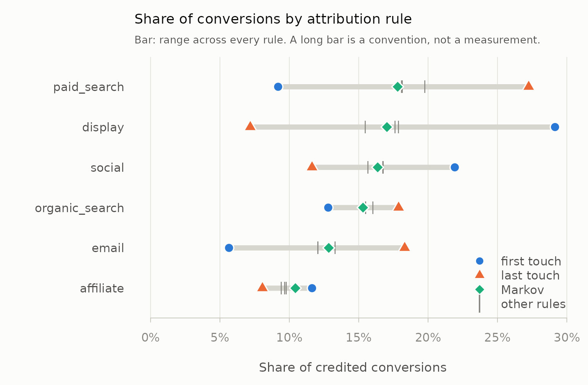

Attribution packages consume journeys —
"display > social > paid_search" strings with
conversion counts attached. Producing those strings from a raw event log
is usually left to the analyst: ChannelAttribution, for
instance, starts from the aggregated paths, on the reasonable grounds
that its job is Markov removal effects and it does that in C++.
So the step gets done in analysis code, usually as a
group_by() and a paste(collapse = " > ").
This vignette is about what that loses, because the answer is not small
and it feeds the transition matrix directly.
library(mediamix)
data(mm_events)
nrow(mm_events)
#> [1] 20799
head(mm_events)
#> customer_id channel timestamp conversion value
#> 1 cust_03227 email 2025-02-10 18:08:57 0 NA
#> 2 cust_03940 2025-05-20 04:44:17 0 NA
#> 3 cust_04838 organic_search 2025-04-04 22:20:01 0 NA
#> 4 cust_00749 affiliate 2025-09-27 03:31:38 0 NA
#> 5 cust_05340 <NA> 2025-02-24 22:17:01 0 NA
#> 6 cust_05271 social 2025-02-18 19:00:56 0 NAmm_events is a synthetic log of about 21,000 touchpoint
events across 5,400 customers. It contains, on purpose, everything a
real export contains: repeat converters, consecutive duplicate channels,
direct and blank and missing channel labels, customers who never
convert, timestamp ties, and rows in no particular order.
The naive approach
One path per customer, in timestamp order:
ordered <- mm_events[order(mm_events$customer_id, mm_events$timestamp), ]
naive <- split(ordered$channel, ordered$customer_id)
c(journeys = length(naive), mean_length = mean(lengths(naive)))
#> journeys mean_length
#> 5400.000 3.8525,400 journeys at a mean length of 3.85. Now the same log through
build_paths():
paths <- build_paths(
mm_events,
id = "customer_id",
channel = "channel",
timestamp = "timestamp",
conversion = "conversion",
value = "value"
)
path_summary(paths)
#> events_in events_out journeys converting_journeys mean_length median_length
#> 1 20799 17306 6137 2741 2.82 3
#> max_length direct_events conversion_events conversions_observed
#> 1 9 1597 2741 2741
#> conversions_unattributable
#> 1 06,137 journeys — 14% more — at a mean length of 2.82, down 27%. Journey counts and lengths feed a Markov transition matrix directly, so a 14% error in the count and a 27% error in the length is not a rounding difference in the final numbers.
Here is where the difference comes from, one concern at a time.
step <- function(...) {
s <- path_summary(build_paths(
mm_events, id = "customer_id", channel = "channel",
timestamp = "timestamp", conversion = "conversion", ...))
c(journeys = s$journeys, mean_length = round(s$mean_length, 2))
}
rbind(
`naive` = c(length(naive), round(mean(lengths(naive)), 2)),
`split on conversion` = step(split_on = "conversion",
collapse_repeats = FALSE),
`+ 30-day inactivity gap` = step(split_on = c("conversion", "gap"),
gap = 30, collapse_repeats = FALSE),
`+ collapse duplicates` = step(split_on = c("conversion", "gap"),
gap = 30, collapse_repeats = TRUE)
)
#> journeys mean_length
#> naive 5400 3.85
#> split on conversion 6137 3.39
#> + 30-day inactivity gap 6158 3.38
#> + collapse duplicates 6158 2.81The seven things that go wrong
1. Journey splitting
A customer who converts in March and again in September is two journeys. Treat them as one and March’s touchpoints take credit for September’s sale, while the journey count falls by every repeat conversion in the file.
repeat_buyers <- table(mm_events$customer_id[mm_events$conversion == 1])
table(as.integer(repeat_buyers))
#>
#> 1 2 3
#> 1509 349 178split_on also accepts "gap", so a customer
who disappears for four months and comes back starts a new journey
rather than extending an eleven-month one.
2. Lookback windows
A touch two years before a conversion did not cause it. Thirty, sixty and ninety days are the standard choices, and they are standard because everybody copied each other.
conversion_lag() lets you read the window off your own
data instead:
conversion_lag(paths)
#> quantile lag
#> 1 0.50 4.635
#> 2 0.75 8.957
#> 3 0.90 14.047
#> 4 0.95 17.427
#> 5 0.99 29.265
#> 6 1.00 135.453Ninety per cent of journeys in this log complete within about fourteen days, so a 30-day window truncates almost nothing and a 90-day window is pure decoration. The long tail is real, though — the slowest journey takes 135 days — so a window is a decision about which tail to discard, not a free simplification. On a considered-purchase category the same table will tell you the opposite, and reading it takes one line.
3. Non-converting journeys
These are kept by default, and you should think hard before changing that.
with_nulls <- as_channel_paths(paths)
head(with_nulls, 4)
#> path total_conversions total_null total_conversion_value
#> 1 social 97 106 13120
#> 2 organic_search 81 91 9013
#> 3 paid_search 81 74 10658
#> 4 display 79 122 9628
c(converting = sum(with_nulls$total_conversions),
null = sum(with_nulls$total_null))
#> converting null
#> 2741 3396Markov removal effects are computed against the null paths: the transition matrix needs an absorbing failure state to compare the conversion state with. Drop them and every channel’s estimated effect is biased upward, silently.
4. Direct, none and missing channels
Every real log has them, and every tutorial handles them differently.
table(build_paths(mm_events, id = "customer_id", channel = "channel",
timestamp = "timestamp", conversion = "conversion",
direct = "label")$channel)
#>
#> (direct) affiliate display email organic_search
#> 1581 1737 3016 2182 2746
#> paid_search social
#> 3205 2823"keep" leaves the labels alone (naming the unnamed ones
so they can be referred to at all), "label" folds them into
one "(direct)" channel, and "drop" removes
those touches entirely. The choice moves the numbers, so it is an
argument rather than a default buried in the source.
5. Accounting for what gets dropped
Dropping direct traffic can strip a converting journey of every touchpoint it had — including, sometimes, the touch that recorded the conversion. mediamix fixes the conversion facts before any filtering, so the conversion is never erased; it is counted and reported as unattributable.
dropped <- build_paths(
mm_events, id = "customer_id", channel = "channel",
timestamp = "timestamp", conversion = "conversion",
lookback = 1, direct = "drop"
)
path_summary(dropped)[, c("conversions_observed", "converting_journeys",
"conversions_unattributable")]
#> conversions_observed converting_journeys conversions_unattributable
#> 1 2741 2538 203Those conversions happened. They just cannot be credited to any channel under these settings, and a pipeline that quietly reports a smaller denominator is lying by omission.
6. Consecutive duplicates
Three page views on the same channel are usually one exposure
recorded three times. Collapsing them is what takes the mean journey
length from 3.38 to 2.81 in the table above.
collapse_repeats = TRUE keeps the first touch of
each run, preserving when the channel entered the journey — if you are
using credit_time_decay(), consider FALSE,
since keeping the first of a run pushes each channel’s apparent recency
backward.
7. Deterministic ordering
Logs written at second resolution are full of ties.
build_paths() breaks them by original row order, so the
same input always gives the same journeys — which matters because
first-touch and last-touch results are otherwise not reproducible.
Assigning credit
Five rules, plus a hook for your own. Each returns the journey table
with a credit column, so they compose and compare.
lin <- credit_linear(paths)
head(lin[, c("path_id", "channel", "touch_rank", "touch_n", "credit")])
#> path_id channel touch_rank touch_n credit
#> 1 cust_00001#1 organic_search 1 1 1.0
#> 2 cust_00001#2 display 1 5 0.2
#> 3 cust_00001#2 organic_search 2 5 0.2
#> 4 cust_00001#2 email 3 5 0.2
#> 5 cust_00001#2 social 4 5 0.2
#> 6 cust_00001#2 organic_search 5 5 0.2Credit sums to 1 within every converting journey, and total credit equals the number of attributable conversions — the invariant that catches journeys silently dropped in construction:
c(total_credit = sum(lin$credit),
attributable = path_summary(paths)$converting_journeys)
#> total_credit attributable
#> 2741 2741attribute() runs several rules at once, which is the
point:
res <- attribute(paths)
head(res, 8)
#> rule channel conversions share value touches
#> 1 linear paid_search 495.83 0.18089 63492 3205
#> 2 linear display 482.87 0.17616 60332 3016
#> 3 linear social 459.31 0.16757 59030 2823
#> 4 linear organic_search 424.84 0.15499 51259 2746
#> 5 linear email 330.17 0.12046 42284 2182
#> 6 linear affiliate 264.80 0.09661 33470 1737
#> 7 linear (blank) 91.29 0.03330 11418 465
#> 8 linear (none) 81.74 0.02982 9697 427The spread is the finding
Any single rule gives you a number. Several rules give you the range that number could have been, which is more honest and usually more useful:
attribution_spread(res)
#> channel min_share max_share mean_share spread first_last_ratio
#> 1 display 0.07187 0.29150 0.17388 0.2196279 4.0558
#> 2 paid_search 0.09194 0.27253 0.18376 0.1805910 0.3373
#> 3 email 0.05655 0.18314 0.12366 0.1265961 0.3088
#> 4 social 0.11638 0.21926 0.16513 0.1028822 1.8840
#> 5 organic_search 0.12806 0.17877 0.15501 0.0507114 0.7163
#> 6 affiliate 0.08063 0.11638 0.09828 0.0357534 1.4434
#> 7 (blank) 0.02919 0.03390 0.03171 0.0047183 0.9302
#> 8 direct 0.02225 0.02681 0.02404 0.0045596 1.0328
#> 9 (none) 0.02736 0.02982 0.02848 0.0024578 1.0133
#> 10 (missing) 0.01569 0.01642 0.01605 0.0007297 1.0465The same table as a picture — each bar is the range a channel’s share covers across all six rules:
plot(res, n = 6)
Display’s share runs from 7% to 29% depending only on the convention
chosen. That channel has not been measured; it has been assigned a
number. Paid search and email move the other way.
channel_positions() says why:
channel_positions(paths)
#> channel only first middle last touches first_last_ratio
#> 9 paid_search 81 171 503 666 1421 0.2568
#> 6 display 79 720 437 118 1354 6.1017
#> 10 social 97 504 449 222 1272 2.2703
#> 8 organic_search 81 270 461 409 1221 0.6601
#> 7 email 46 109 364 456 975 0.2390
#> 4 affiliate 40 279 276 181 776 1.5414
#> 1 (blank) 27 53 80 59 219 0.8983
#> 3 (none) 19 57 72 56 204 1.0179
#> 5 direct 13 50 59 48 170 1.0417
#> 2 (missing) 9 36 32 34 111 1.0588Display opens journeys — it appears first six times for every once it appears last — while paid search and email close them. First-touch and last-touch attribution therefore disagree about them by construction, and reporting either one alone is choosing a side of that disagreement without saying so.
Note that both tables carry a column called
first_last_ratio and they are not the same quantity. Here
it is a ratio of touchpoint counts (6.10 for display); in
attribution_spread() above it is a ratio of credited
shares (4.06). Both say display opens journeys; they are
measured in different currencies and will not agree numerically.
The assist matrix is the other half of the picture:
real <- c("display", "social", "organic_search", "paid_search", "email")
round(assisted_conversions(paths, normalise = TRUE)[real, real], 3)
#> assisted
#> assisting display social organic_search paid_search email
#> display 0.101 0.258 0.318 0.415 0.304
#> social 0.175 0.116 0.266 0.389 0.290
#> organic_search 0.139 0.168 0.128 0.294 0.226
#> paid_search 0.096 0.127 0.191 0.128 0.179
#> email 0.089 0.128 0.167 0.250 0.068Read a row as “this channel assisted these channels”. Display precedes paid search in 42% of the converting journeys display appears in; paid search precedes display in only 10% of its own. That asymmetry is the same finding as the first-versus-last ratio, seen pairwise rather than in aggregate.
Time decay, and the connection to the other half
credit_time_decay() spreads a conversion’s credit
backward across prior touchpoints with geometric decay — the same kernel
adstock_geometric() uses to spread spend forward, and the
same decay vocabulary:
td <- credit_time_decay(paths, decay = decay_from_half_life(3))
example <- td[td$path_id == td$path_id[td$converted & td$touch_n >= 4][1], ]
example[, c("channel", "touch_rank", "time_to_conversion", "credit")]
#> channel touch_rank time_to_conversion credit
#> 2 display 1 16.525 0.009904
#> 3 organic_search 2 5.862 0.116358
#> 4 email 3 5.005 0.141849
#> 5 social 4 2.045 0.281075
#> 6 organic_search 5 0.000 0.450814That symmetry is not a coincidence. See
vignette("spine").
Data-driven attribution: Markov removal effects
The five rules above are conventions chosen in advance. The Markov model of Anderl et al. (2016) lets the journeys choose instead: it fits a transition matrix from start, through channels, to conversion or null, and credits each channel by its removal effect — how much the probability of converting falls when every transition into that channel is sent to null instead.
markov_removal() fits the order-1 model exactly, from
the absorbing-chain fundamental matrix, in base R:
mk <- markov_removal(paths)
mk
#> channel removal_effect conversions share value
#> 1 paid_search 0.43654 488.15 0.17809 61389
#> 2 display 0.41762 466.99 0.17037 58728
#> 3 social 0.40124 448.68 0.16369 56426
#> 4 organic_search 0.37534 419.72 0.15313 52783
#> 5 email 0.31480 352.02 0.12843 44269
#> 6 affiliate 0.25588 286.13 0.10439 35984
#> 7 (blank) 0.07586 84.83 0.03095 10668
#> 8 (none) 0.06823 76.29 0.02783 9594
#> 9 direct 0.06573 73.50 0.02681 9243
#> 10 (missing) 0.03996 44.69 0.01630 5620
attr(mk, "p_conversion")
#> [1] 0.4466The null paths are what make this work — they are how the model
learns how often a journey ends in nothing, which is why
build_paths() keeps them by default.
attribute() includes it as the "markov" rule,
so the spread table above already had it in:
res[res$rule == "markov", c("channel", "conversions", "share")]
#> channel conversions share
#> 51 paid_search 488.15 0.17809
#> 52 display 466.99 0.17037
#> 53 social 448.68 0.16369
#> 54 organic_search 419.72 0.15313
#> 55 email 352.02 0.12843
#> 56 affiliate 286.13 0.10439
#> 57 (blank) 84.83 0.03095
#> 58 (none) 76.29 0.02783
#> 59 direct 73.50 0.02681
#> 60 (missing) 44.69 0.01630It is still not incrementality. Removing a state from a chain assumes every customer who would have passed through it is lost and none finds another route to the same purchase. It is a more data-driven convention than first-touch, and a convention nonetheless.
Handing off to ChannelAttribution
For higher-order chains, or path tables too large for a dense matrix,
ChannelAttribution does the same computation in C++.
as_channel_paths() exports the journeys in exactly the
format it expects:
ca <- as_channel_paths(paths)
head(ca, 4)
#> path total_conversions total_null total_conversion_value
#> 1 social 97 106 13120
#> 2 organic_search 81 91 9013
#> 3 paid_search 81 74 10658
#> 4 display 79 122 9628
ChannelAttribution::markov_model(
ca, var_path = "path",
var_conv = "total_conversions", var_null = "total_null"
)
#>
#> Number of simulations: 100000 - Convergence reached: 2.69% < 5.00%
#>
#> Percentage of simulated paths that successfully end before maximum number of steps (10) is reached: 99.14%
#>
#> [1] "*** Install ChannelAttribution Pro for free running install_pro(). Visit https://channelattribution.io for more info. Set flg_pro=FALSE to hide this message."
#> channel_name total_conversions
#> 1 social 458.64
#> 2 organic_search 415.84
#> 3 paid_search 488.54
#> 4 display 472.04
#> 5 email 352.16
#> 6 affiliate 285.13
#> 7 (blank) 81.72
#> 8 (none) 73.99
#> 9 direct 68.32
#> 10 (missing) 44.60For order = 1 the two should agree up to
ChannelAttribution’s simulation error.
One caveat, stated plainly
Rule-based attribution is a bookkeeping convention, not a causal estimate. It divides observed conversions among observed touchpoints according to a rule you chose. It cannot tell you what would have happened if a channel had not run, because that outcome is not in the log — no rule, however sophisticated, recovers a counterfactual from data that does not contain one. Only an experiment does.
Well-built journeys make the bookkeeping honest, comparable across rules, and reproducible. That is worth a great deal. It is not incrementality.